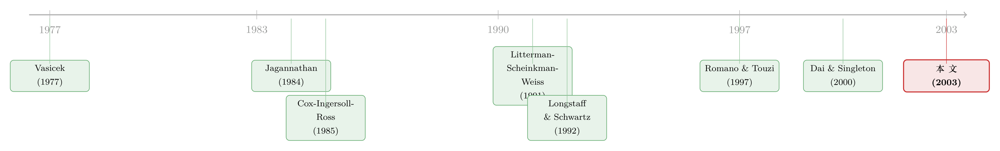

债券价格和波动率，到底是「正」还是「负」？——一道被期权直觉骗了很久的符号题
本文读的是 Mele (2003, Review of Financial Studies)：在一个只假设短期利率和它的瞬时波动率是扩散过程的极简框架里，作者证明了债券价格对短期利率、对波动率的所有「方向性」性质，都可以归结为一组关于风险中性漂移函数与债券价格凸性的联合约束。最反直觉的一条结论是——在期权世界里天经地义的「凸性 ⟹ 波动率越高越值钱」，搬到债券上未必成立：在短到期端，债券价格甚至会随波动率上升而下跌。
1 一个我们以为早就懂了的问题
学过固定收益的人，对两件事大概都不会迟疑。
第一件：利率涨，债券跌。这是债券定价的「第一性常识」——贴现率上去了，未来那一块钱的现值自然缩水。第二件，来自期权的类比：波动率越大，凸性 (convexity) 的产品就越值钱。期权的 vega 恒正，是因为它的 payoff 是凸的，而波动率上升相当于给标的资产的终端分布做了一次「保均值的扩散」（mean-preserving spread），凸函数在更分散的分布下期望更高。债券价格作为利率的函数也常常是凸的（这就是久期之外的「凸性」一词的由来），那么——波动率上升，债券是不是也应该更值钱？
这两件「常识」，听上去都顺理成章。但 Mele 这篇论文恰恰要告诉你：第一件常识，在两因子世界里可能是错的；第二件常识，几乎总是错的。 而把这两处「翻车」串起来的，是同一个被我们长期忽略的东西——短期利率在风险中性测度下的漂移函数如何依赖波动率。
这是一篇纯理论论文，没有数据、没有回归。它属于一个稍显古典、却极其优雅的传统：在尽可能少的假设下，问「所有不允许套利的债券价格，必然共享哪些定性性质？」——就像期权领域里 Merton (1973)、Cox and Ross (1976)、Jagannathan (1984) 做过的那样。
2 模型设定：把利率和它的「脾气」放进同一个马尔可夫系统
作者的出发点干净得近乎苛刻：经济中所有的不确定性，由短期利率 \(r\) 和它的瞬时波动率 \(y\) 这一对状态变量充分概括，二者共同构成一个马尔可夫过程。在风险中性测度 \(Q\) 下，它们满足如下随机微分系统（即论文的 Equation (1)）：
$$ dr(\tau) = b(r,y)\,d\tau + \sigma^{(1)}(r,y)\,dW(\tau) + \sigma^{(2)}(r,y)\,dB(\tau) $$
$$ dy(\tau) = \varphi(r,y)\,d\tau + \eta^{(1)}(r,y)\,dW(\tau) + \eta^{(2)}(r,y)\,dB(\tau) $$
其中 \(W, B\) 是两个独立的 \(Q\)-布朗运动。注意这里没有指定任何具体函数形式——\(b, \varphi, \sigma^{(j)}, \eta^{(j)}\) 只需满足保证强解存在的正则性条件。为方便起见，记利率方差的一半 \(\sigma(r,y) \equiv \tfrac{1}{2}\sum_{j=1}^2 \sigma^{(j)}(r,y)^2\)，并假设 \(\partial\sigma/\partial y \ge 0\)、\(\partial\sigma/\partial r \ge 0\)（即波动率高、利率高时，利率本身抖得更厉害——很温和的要求）。
这里有一个至关重要的细节：式 (1) 是写在风险中性测度下的。它和物理测度下的「真实」动态由风险溢价联系起来（Equation (2)）：
$$ b(r,y) = \hat{b}(r,y) + \sum_{j=1}^2 \sigma^{(j)}(r,y)\,\Lambda_j(r,y) $$
$$ \varphi(r,y) = \hat{\varphi}(r,y) + \sum_{j=1}^2 \eta^{(j)}(r,y)\,\Lambda_j(r,y) $$
其中 \(\hat{b}, \hat{\varphi}\) 是物理测度下的真实漂移，\(\Lambda_j\) 是两个布朗运动各自的风险溢价。这一步的意义在于：本文后面所有结论里出现的「风险中性漂移」，既装着真实世界的动态，也装着投资者的风险厌恶——它不是一个纯数学对象，而是把基本面和定价偏好揉在一起的复合物。
无套利意味着纯贴现债券价格 \(u(x,s,t,T)\)（到期日 \(T\)、当前状态 \((x,s)\)）满足如下偏微分方程（Equation (3)）：
$$ 0 = \frac{\partial u}{\partial \tau} + Lu - r\,u, \qquad u(r,y,T,T) = 1 $$
\(L\) 是式 (1) 的无穷小生成元。由 Feynman–Kac 表示定理，债券价格就是那个熟悉的期望（Equation (4)）：
$$ u(x,s,t,T) = E\!\left[\exp\!\left(-\int_t^T r(\tau)\,d\tau\right)\right] $$
到此为止，都还是教科书。真正的工作，从「对它求导」开始。
3 关键一步：把「债券对波动率的敏感度」单独解出来
我们想知道的是：债券价格对波动率的偏导 \(u_2 \equiv \partial u/\partial y\)，到底是正还是负？
直接对 Equation (4) 那个期望求导是很难看清符号的。作者的做法干净利落：直接对定价 PDE (3) 关于波动率 \(y\) 求一次偏导。链式法则一通操作之后，\(u_2\) 自己也满足一个抛物型 PDE（论文的 Equation (7)）——而这正是全文的枢纽方程：
这里 \(u_1 \equiv \partial u/\partial r\)、\(u_{11}\equiv \partial^2 u/\partial r^2\)，\(b_2 \equiv \partial b/\partial y\)，\(\sigma_2 \equiv \partial \sigma/\partial y\)；\(L_1, k_1\) 与 (3) 中的 \(L, r\) 扮演同样的「生成元 + 贴现」角色。
为什么这个方程是枢纽？因为它把一个看不透的偏导，变成了一个带「源项」的抛物方程。而抛物方程有一个极其好用的工具——最大值原理 (maximum principle)：如果终端条件为零，且源项（这里就是花括号里的 \(b_2 u_1 + \sigma_2 u_{11}\)）在整个区域上符号恒定，那么解 \(u_2\) 就有和源项相同的符号。
于是，「债券对波动率是正还是负」这道大题，被压缩成了一道小题：
$$ \operatorname{sign}(u_2) = \operatorname{sign}\big(\,b_2\,u_1 + \sigma_2\,u_{11}\,\big) $$
接下来要做的，只是逐项掂量这两块的符号。
4 反转：为什么债券不是期权
源项有两块。
凸性项 \(\sigma_2 u_{11}\)：\(\sigma_2 \ge 0\)（波动率越高，利率方差越大，这是设定里的温和假设）。如果债券价格关于利率是凸的（\(u_{11} > 0\)），这一项就是正的。这一块，正是期权直觉的来源——它对应 Jagannathan (1984)、Romano and Touzi (1997) 那条「凸性 ⟹ 波动率越高越值钱」。
斜率项 \(b_2 u_1\)：这是期权世界里根本不存在的一项。它来自一个事实——在期限结构里，波动率的变化不是对利率终端分布的保均值扩散，因为短期利率的风险中性漂移 \(b\) 本身会随波动率 \(y\) 而变（\(b_2 \neq 0\)）。换句话说，波动率一动，未来利率的期望也跟着动，而不只是离散度变了。
于是两条结论自然落地：
性质 (A)（长端、温和条件下，正相关）。 若短期利率的风险中性漂移随波动率严格递减（\(b_2 < 0\)），且债券价格关于利率递减（\(u_1 < 0\)）又凸（\(u_{11} > 0\)），则 \(b_2 u_1 > 0\)、\(\sigma_2 u_{11} \ge 0\)，两块同号为正，于是 \(u_2 > 0\)——债券价格与随机波动率正相关。这时它和期权的直觉一致。
性质 (B)（短端，可能反号）。 关键的反转在到期日趋近时出现。作者证明（Lemma A3）：当到期日 \(\tau \to T\) 时，凸性 \(u_{11}\) 比斜率 \(u_1\) 更快地趋于零。也就是说，在短到期端，凸性项被压扁、斜率项说了算：
$$ \operatorname{sign}(u_2) \;\approx\; \operatorname{sign}(b_2 u_1) \;=\; -\operatorname{sign}(b_2) \quad (\text{当 } u_1<0) $$
于是 Proposition 3 给出了那句干净利落的话：在短到期端，债券价格随波动率递减（递增），当且仅当 \(b_2 > 0\)（\(b_2 < 0\)）。 当 \(b_2 > 0\)（波动率上升把未来利率的期望也顶上去）、且债券价格关于利率递减（\(u_1 < 0\)，贴现率涨债券跌）时，债券价格在短端会随波动率下跌。
这恰恰把 Litterman, Scheinkman, and Weiss (1991) 那个著名的数值现象给「证」了出来：在他们的乘法树里，波动率上升会推高未来利率的期望（对应 \(b_2 > 0\)），而贴现因子对利率递减（对应 \(u_1 < 0\)），所以短端债券随波动率下跌、长端随波动率上涨——短端是斜率项主导，长端是凸性项主导。一个纯数值的观察，被一个 PDE 的符号分析彻底讲清楚了。
这就是为什么作者强调：把期权领域的「凸性 ⟹ 波动率为友」直接搬到债券上是错的。在 Black–Scholes 式的期权设定里，波动率的提升确实是标的终端分布的保均值扩散（Jagannathan 的洞见），凸性足以保证正相关；但在期限结构里，短期利率的漂移会随波动率漂移，「均值」并不被保住。关于「额外的风险何时严格抬高期权价值」这个孪生问题，可参见《「风险让期权更值钱」——这句人人会说的话，其实只对了一半》。
5 顺带翻掉第二个常识：利率涨，债券一定跌吗？
同样的机器，也能用来审视「利率涨债券跌」这条第一性常识。
在单因子世界里它当然成立。但在两因子（利率 + 波动率）世界里，作者指出：债券价格与短期利率的经典反向关系未必成立。Proposition 1 和 2 给出了它仍然成立的充分条件：当波动率的风险中性漂移和扩散函数都独立于短期利率时（以及非常直观的短到期情形）。一旦这个独立性被打破，中长端债券价格和短期利率的关系，就要进一步被「债券价格 vs 波动率」的关系所限定——两道符号题，本质上是同一台机器在转。
至于债券价格关于利率的凸性本身（\(u_{11} > 0\)），Proposition 1 也给了条件：只要短期利率风险中性漂移的凸性有一个上界即可（Equations (8)、(9)）。所以「凸性」在这里不是免费午餐，而是对漂移函数二阶行为的一个约束。
整个分析最后被作者推广到三因子模型（Section 4，Propositions 4–5，本质相同但条件更复杂），以及跳跃 (jumps) 与违约 (default) 的情形（Section 5，Proposition 6）：只要跳跃幅度分布的参数和各种风险率「充分独立」于状态变量的水平，前述结论依然稳健。
6 文献脉络
把这条线索拉直了看，会发现它站在两条河流的交汇处。
第一条河，是短期利率建模。 源头是 Vasicek (1977) 和 Cox, Ingersoll, and Ross (1985, CIR)——它们给定一个外生的短期利率过程，推出无套利的债券价格。这套范式被用了几十年，却始终缺一个系统的理论去回答「债券价格关于利率、关于波动率，到底是什么方向、什么形状」。随后波动率被请进了模型：Longstaff and Schwartz (1992) 的两因子仿射模型，把随机波动率写进了期限结构；Dai and Singleton (2000) 则给整个仿射族做了系统的分类与设定分析。而 Litterman, Scheinkman, and Weiss (1991) 用数值实验最早揭示了「短端、长端债券对波动率反号」这一现象，却没有给出理论解释。
第二条河，是期权的「一般性质」传统。 Merton (1973)、Cox and Ross (1976) 在最少的假设下推导期权价格的普适性质；Jagannathan (1984) 给出了那个关键洞见——终端价格的保均值扩散 ⟺ 看涨期权更值钱；Romano and Touzi (1997)、Bergman, Grundy, and Wiener (1996)、El Karoui, Jeanblanc-Picqué, and Shreve (1998) 则在扩散框架下把「凸性 ⟹ 波动率为友」做到了相当一般的程度。

Mele (2003) 做的，是把第二条河的「一般性质」方法论，第一次系统地引入第一条河的期限结构领域——并且发现两条河在「波动率」这件事上的结论并不一样。这正是本文真正的新意所在：它不是又一个利率模型，而是关于「所有合法利率模型必然共享什么性质」的元定理。（关于「换一把尺子，短期利率的漂移是不是真的非线性」这个相邻问题，可参见《利率会不会「拐弯」？——一个被换了把尺子量出来的老问题》；关于波动率到底藏在收益率曲线的哪里、又如何被「拟合得太好却充耳不闻」，可参见《波动率到底藏在哪里？》与《收益率曲线拟合得再好，也可能对波动率「充耳不闻」》。）
7 评论与延伸（Q&A + 研究方向）
(a) 几个可能的疑问
Q：这篇文章和「又一个利率模型」的区别到底在哪？
区别在「层级」。Vasicek、CIR、Longstaff–Schwartz 都是给定具体函数形式、解出具体债券价格的模型。本文不指定任何函数形式，只假设状态变量是满足正则性的扩散过程，然后问：所有这些模型必然共享哪些定性性质？ 它是关于模型的模型——所以作者会说，仿射模型之所以「典型」，是因为它们展示的定性性质，在更一般的非线性设定里也会出现。
Q：「凸性 ⟹ 波动率越高越值钱」为什么在期权里对、在债券里错？
因为在 Black–Scholes 式期权里，波动率上升是对标的终端分布的保均值扩散——均值不动，只是更散，凸函数的期望因此抬高（这是 Jagannathan 1984 的洞见）。但在期限结构里，短期利率的风险中性漂移 \(b\) 会随波动率 \(y\) 变动（\(b_2 \neq 0\)），波动率一动，未来利率的期望也跟着动，均值不再被保住。于是除了凸性项 \(\sigma_2 u_{11}\)，还冒出一个期权世界里没有的斜率项 \(b_2 u_1\)，后者在短端反而占上风。
Q：为什么偏偏是「短到期端」会反号？
因为到期日趋近时，债券价格关于利率的凸性 \(u_{11}\) 比斜率 \(u_1\) 更快地趋于零（Lemma A3）。短端时间太短，复利的「弯曲」还来不及积累，凸性项几乎消失，符号就完全由斜率项 \(b_2 u_1\) 说了算。长端则相反，凸性有足够的时间积累，重新占据主导。
Q：「最大值原理」在这里到底起了什么作用？
它是把「期望求导」这个看不透符号的问题，转成「PDE 源项符号」这个看得清的问题的桥。一旦 \(u_2\) 满足终端为零的抛物方程，且源项符号恒定，最大值原理就保证 \(u_2\) 和源项同号。整篇文章的所有命题，几乎都是「写出某个偏导满足的 PDE → 判断源项符号 → 套最大值原理」这一套路的不同变体。
Q：结论依赖风险中性测度，是不是就只在「风险中性世界」成立？
不是。作者特意强调：以风险中性测度作为技术起点，不等于只考虑风险中性世界。通过 Equation (2) 的风险溢价分解，风险中性漂移 \(b\) 同时装着物理测度下的真实漂移 \(\hat b\) 和风险溢价 \(\Lambda_j\)。所以「\(b_2\) 的符号」这件事，既可能来自真实利率动态，也可能来自投资者风险厌恶随波动率的变化——所有结论都是对「基本面 + 风险偏好」的联合约束。
Q：跳跃和违约会不会推翻这些结论？
作者在 Section 5（Proposition 6）证明，只要跳跃幅度分布的参数、各种风险率「充分独立」于状态变量的水平，前面这套符号分析依然成立。换句话说，结论对「不连续」是稳健的——前提是这些不连续的强度本身不能太剧烈地依赖利率和波动率的水平。
(b) 几个可能的研究问题与提案
1. 把这套「符号定理」搬到公司债与信用利差上。
【经济故事】公司债价格是无风险利率、违约强度、回收率的函数。本文的「债券价格 vs 波动率」符号分析，天然可以推广到「信用利差 vs 违约强度波动率」：信用利差对违约强度波动率是正还是负，应同样取决于违约强度风险中性漂移如何依赖其自身波动率。这能给结构化模型为何系统性低估利差离散度（而非水平）提供一个定性诊断。 【可行性】中。理论延伸 doable（Duffie–Singleton 1999 的强度框架现成）；实证检验需要 CDS 隐含波动率与利差的高频数据，识别 \(b_2\) 类对象较难，更适合做成「理论 + 校准」而非干净的因果识别。
2. 用本文的符号约束去「测谎」现有利率模型。
【经济故事】本文给出的是所有无套利模型必须满足的定性约束。反过来，可以把它当成一组可证伪的限制：如果数据显示短端债券价格随隐含波动率上升而下跌，那就意味着 \(b_2 > 0\)，这对短期利率漂移的设定构成一个直接约束，可以据此拒绝一批模型。 【可行性】高。利率期权（cap/floor、swaption）的隐含波动率与对应债券价格都可得，构造「短端债券价格对波动率冲击的反应符号」是一个清晰的检验对象。与非参数设定检验的思路相通（参见《残差不会撒谎》）。
3. 外资持有人结构与利率风险溢价的「漂移依赖波动率」通道。
【经济故事】本文的 \(b_2\)（风险中性漂移对波动率的依赖）一半来自风险溢价 \(\Lambda_j\)。如果某类债券的边际投资者（如外资、央行）对波动率的风险厌恶不同，\(b_2\) 就会随持有人结构变化，进而改变「债券价格 vs 波动率」的符号。这给「谁持有债券会改变其波动率定价」提供了一个结构化的预测。 【可行性】中。需要把持有人结构（如国债的境外持有占比）与隐含波动率敏感度对接，识别仍偏相关性；但作为「持有人异质性如何进入风险中性漂移」的理论 + 描述性证据，是 doable 的。
8 参考文献
Bergman, Y. Z., B. D. Grundy, and Z. Wiener (1996). General Properties of Option Prices. Journal of Finance 51(5), 1573–1610.
Cox, J. C., and S. A. Ross (1976). A Survey of Some New Results in Financial Option Pricing Theory. Journal of Finance 31(2), 383–402.
Cox, J. C., J. E. Ingersoll, and S. A. Ross (1985). A Theory of the Term Structure of Interest Rates. Econometrica 53(2), 385–407.
Dai, Q., and K. J. Singleton (2000). Specification Analysis of Affine Term Structure Models. Journal of Finance 55(5), 1943–1978.
Duffie, D., and K. Singleton (1999). Modeling Term Structures of Defaultable Bonds. Review of Financial Studies 12(4), 687–720.
El Karoui, N., M. Jeanblanc-Picqué, and S. E. Shreve (1998). Robustness of the Black and Scholes Formula. Mathematical Finance 8(2), 93–126.
Jagannathan, R. (1984). Call Options and the Risk of Underlying Securities. Journal of Financial Economics 13(3), 425–434.
Litterman, R., J. Scheinkman, and L. Weiss (1991). Volatility and the Yield Curve. Journal of Fixed Income 1(1), 49–53.
Longstaff, F. A., and E. S. Schwartz (1992). Interest Rate Volatility and the Term Structure: A Two-Factor General Equilibrium Model. Journal of Finance 47(4), 1259–1282.
Mele, A. (2003). Fundamental Properties of Bond Prices in Models of the Short-Term Rate. Review of Financial Studies 16(3), 679–716.
Merton, R. C. (1973). Theory of Rational Option Pricing. Bell Journal of Economics and Management Science 4(1), 141–183.
Romano, M., and N. Touzi (1997). Contingent Claims and Market Completeness in a Stochastic Volatility Model. Mathematical Finance 7(4), 399–412.
Rothschild, M., and J. E. Stiglitz (1970). Increasing Risk: I. A Definition. Journal of Economic Theory 2(3), 225–243.
Vasicek, O. (1977). An Equilibrium Characterization of the Term Structure. Journal of Financial Economics 5(2), 177–188.